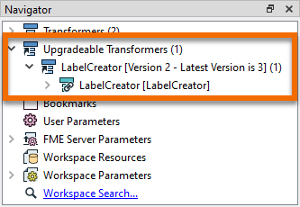

After completing this unit, you’ll be able to:
FME allows tracking versions for external file definitions of custom transformers (linked transformers). Each time a user edits a custom transformer definition, they can save a new version.
In that way, a single FMX file can contain multiple versions of the same custom transformer.
Versioning allows the author of a custom transformer to revert to a previous definition, should the need arise. It also allows users to create a different definition for each version of FME. The custom transformer remains backward-compatible with older FME versions but has enhanced functionality in newer versions.
After editing an unversioned custom transformer, clicking the save button issues the following prompt:
The two versioning options are to Overwrite the existing version or create a New Version.
Essentially, the prompt asks whether to activate versioning. Clicking New Version versions the transformer and saves the edits as version 2. Note that creating a new version does not create a separate FMX file; instead, it creates a different version of the transformer within the same FMX file.
The title bar in Workbench illustrates the version number of a custom transformer file:

The transformer remains unversioned if you choose Overwrite in the Save Transformer dialog.
Opening a versioned custom transformer in Workbench issues the following prompt:

This prompt asks which version you wish to edit or whether you want to start with a new version. You can:
It’s essential to be aware that this dialog is the only way to create a new version. Clicking the save button only saves updates to the currently open version. To create a new version, you need to close and reopen the file, causing the Select Transformer Version dialog to appear.
Each version of a custom transformer is associated with a particular FME version. You can choose to make edits to a transformer created in an older version of FME, but you will receive a warning message:

Here a user created version 1 with FME 2020, and the author is attempting to edit it in FME 2022. Should they go ahead and do so, version 1 of the transformer will no longer be valid for use in FME 2020.
If you turn on the option to display the transformer version (Tools > FME Options > Transformers > Display transformer version), then each linked custom transformer displays its version number in the summary annotation:

When FME detects that a new version is available (i.e., the author has made edits and saved them as a new version) and that this version is compatible with the current FME version, then an option appears on the context menu to allow an update:

Choosing to upgrade means the transformer becomes linked to the latest version, and the summary annotation updates to reflect the change.
You can also upgrade eligible custom transformers in the same method you upgrade FME transformers when moving to a new FME version: in the Navigator. Custom transformers will appear under Upgradable Transformers, just like regular transformers. Learn more about upgrading FME transformers.
